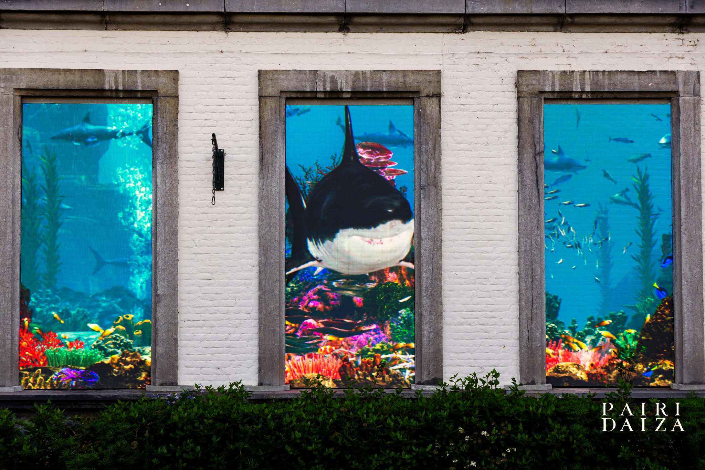
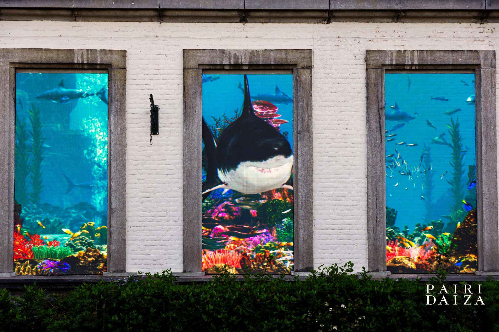

Nemo - Pairi Daiza
Le projet Nemo sur le Nautilus de Pairi Daiza est un aquarium géant intéractif en collaboration avec la société Hovertone. Réalisé entièrement avec Unreal Engine 5 avec l'équipe de media solution chez DreamWall, cela a été une belle épreuve d'optimisation et de connaissance approndie dans le Display LED au sein d'Unreal Engine. Certains animaux marins sont "vivants" dans la scene, réagissent au décor marrin, avec l'aide des techniciens UE sur site, il a fallu mettre en place une série de BluePrint et de conditions pour faire naître le projet. Beaucoup d'animaux marins y ont été intégrés également avec l'aide des animateurs 3D de professions au sein de DreamWall. Mon travail à été au départ le layout du fond marin je suis ensuite passer les systèmes de particules (Niagara), les intégrations des meshes 3D animés avec leurs rig & shaders, animations dans Unreal, gestions des actors, les récifs coralliens, la mise en place de toute une série de sequencers d'animations.
The Nemo project on Pairi Daiza's Nautilus is a giant interactive aquarium in collaboration with Hovertone. Created entirely with Unreal Engine 5 with the media solution team at DreamWall, it was a great test of optimization and in-depth knowledge of LED displays within Unreal Engine. Some marine animals are “alive” in the scene and react to the marine environment. With the help of UE technicians on site, a series of BluePrints and conditions had to be put in place to bring the project to life. Many marine animals were also integrated with the help of professional 3D animators at DreamWall. My work initially involved designing the seabed layout, then I moved on to the particle systems (Niagara), integrating the animated 3D meshes and their rig & shaders, animations in Unreal, actor management, coral reefs, and setting up a whole series of animation sequencers.
 
